Цель работы
Научиться работе в ос Linux на базвом уровне.
Задание
Выполнить курс на stepic. 2 этап
Теоретическое введение
Курс выполнялся на платформе stepic.
Выполнение лабораторной работы
Выполнение 1 задания (рис. 1).
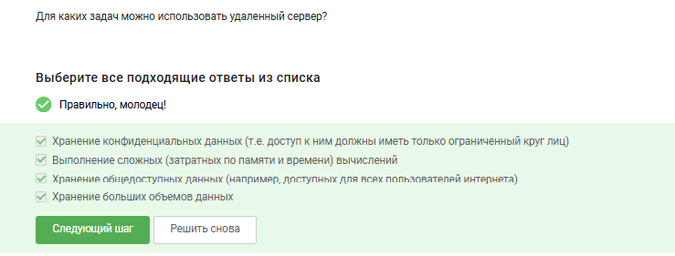
Выполнение 2 задания (рис. 2).
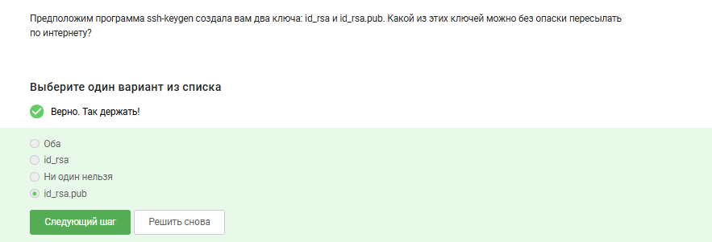
Выполнение 3 задания (рис. 3).
Выполнение 4 задания (рис. 4).
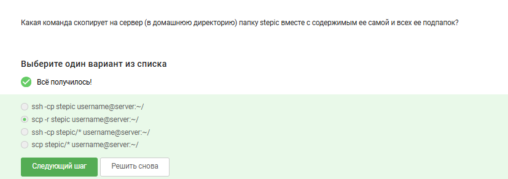
Выполнение 5 задания (рис. 5).
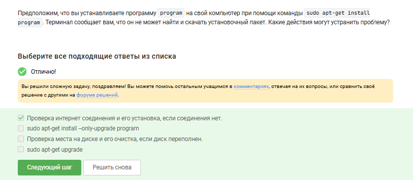
Выполнение 6 задания (рис. 6).
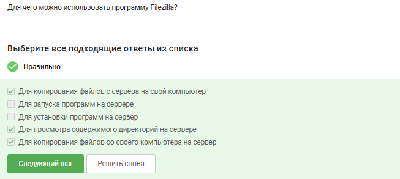
Выполнение 7 задания (рис. 7).
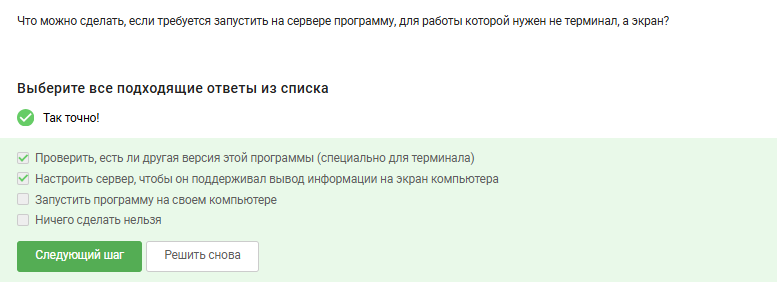
Выполнение 8 задания (рис. 8).
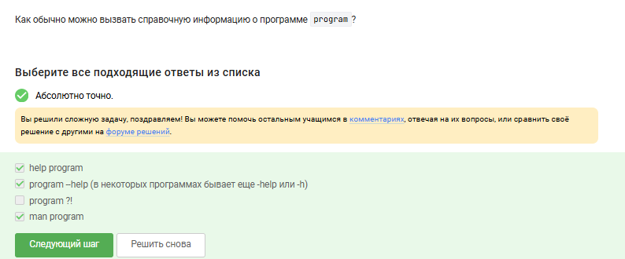
Выполнение 9 задания (рис. 9).
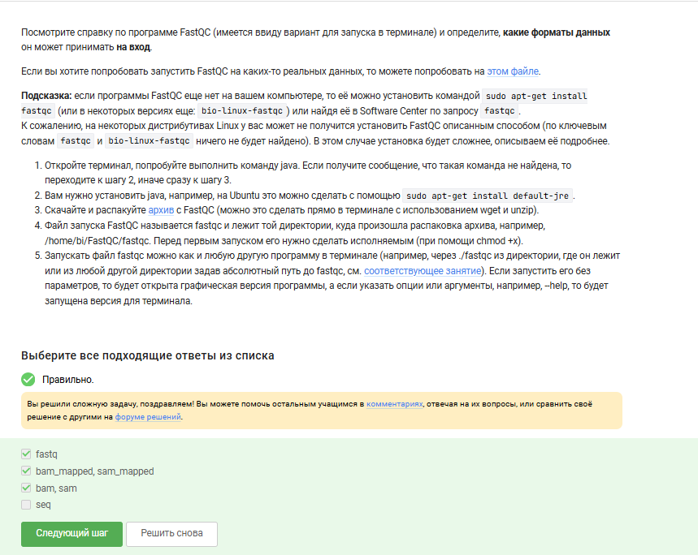
Выполнение 10 задания (рис. 10).
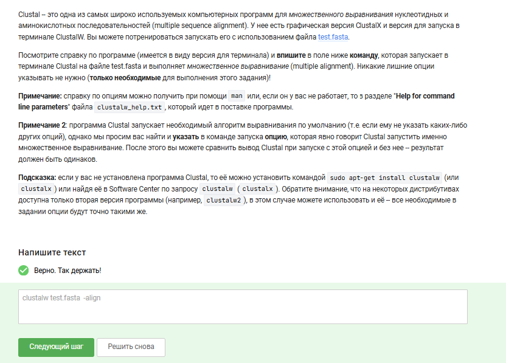
Выполнение 11 задания (рис. 11).
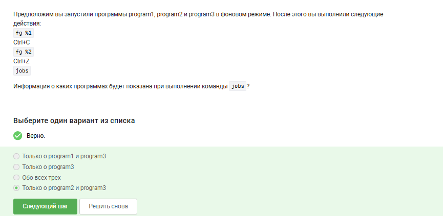
Выполнение 12 задания (рис. 12).
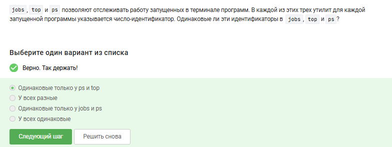
Выполнение 13 задания (рис. 13).
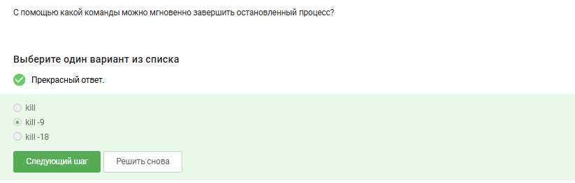
Выполнение 14 задания (рис. 14).
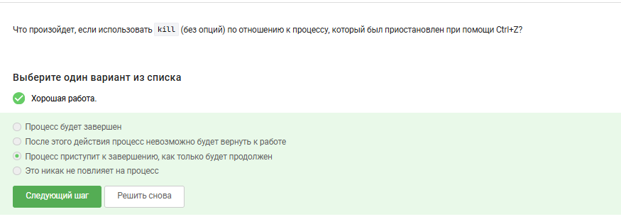
Выполнение 15 задания (рис. 15).
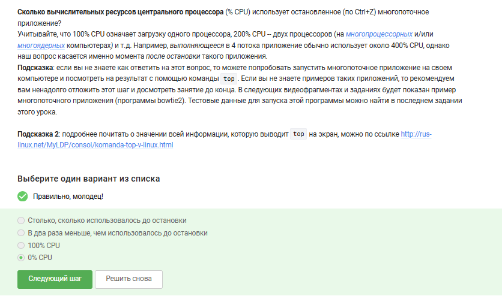
Выполнение 16 задания (рис. 16).
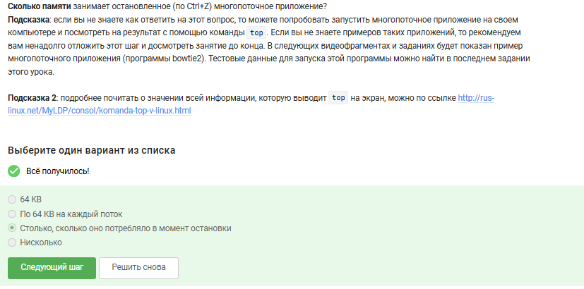
Выполнение 17 задания (рис. 17).
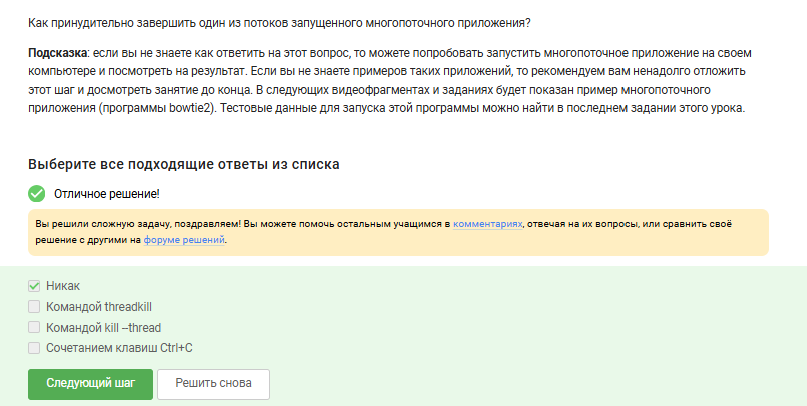
Выполнение 18 задания (рис. 18).
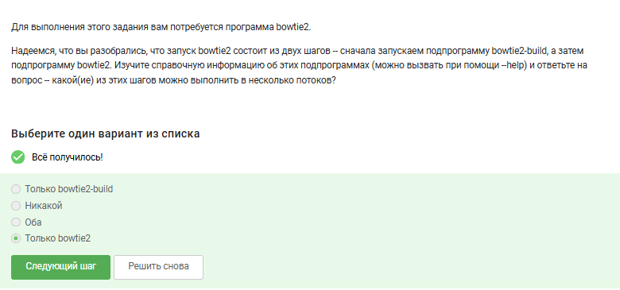
Выполнение 19 задания (рис. 19).
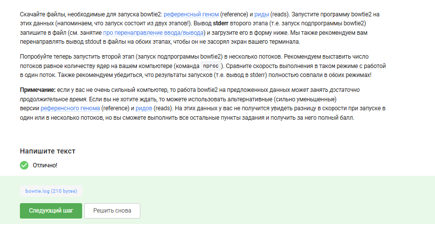
Выполнение 20 задания (рис. 20).
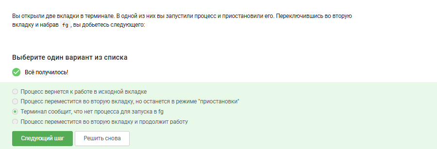
Выполнение 21 задания (рис. 21).
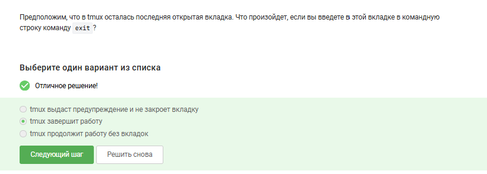
Выполнение 22 задания (рис. 22).
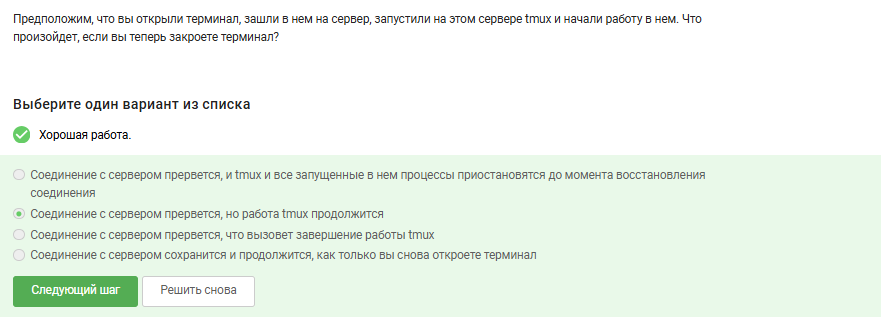
Выполнение 23 задания (рис. 23).
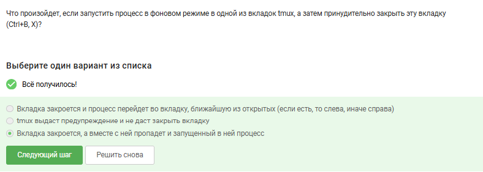
Выполнение 24 задания (рис. 24).
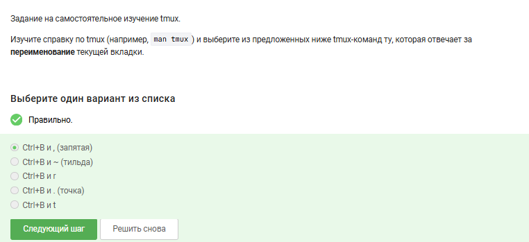
Выполнение 25 задания (рис. 25).
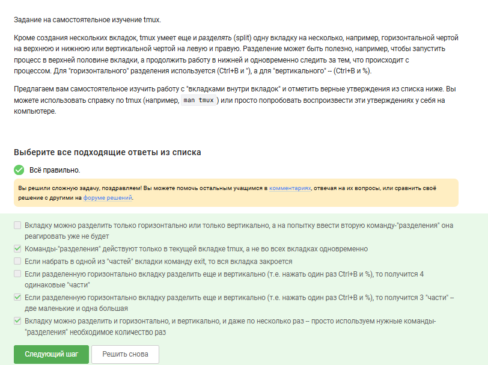
Успешно выполнена 1 часть курса на stepic